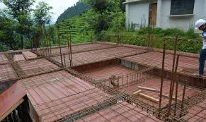

SUNKEN SLAB

This type slab used below the washrooms to cover sewer pipes or WC pipes or other equipment is called a sunken slab.
Care should be taken to avoid leakage problems as the water pipes are hidden below the ground.
Proper waterproofing and treatment of the slab provided to prevent leakage or moisture. After sending the sewer pipes in the slab,
the slab is filled with broken bricks or coal or suitable lightweight material.
The slab that is provided below the normal level of the floor at a depth of 200mm to 300mm and filled with pieces of broken
brick is called a sunken slab.
or
The slab that is provided above the normal floor level at a height of 200mm to 300mm and filled with coal
or pieces of broken bricks called the sunken slab.